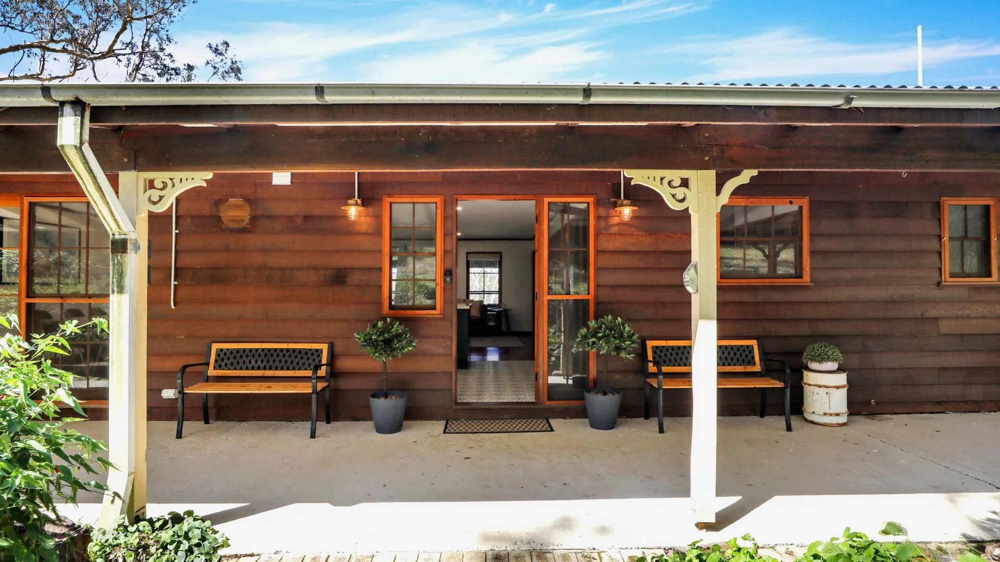
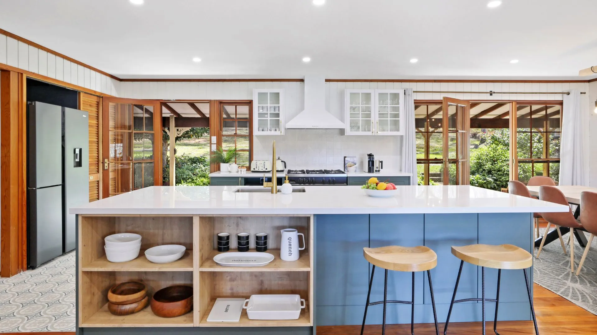
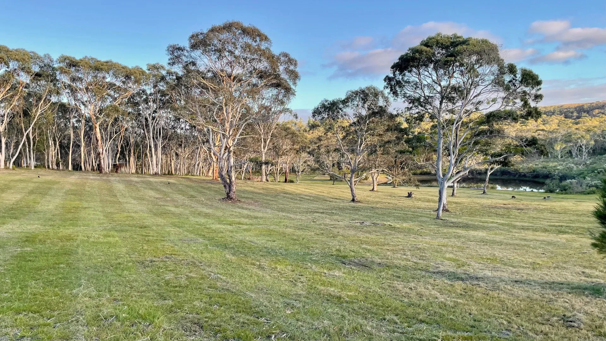
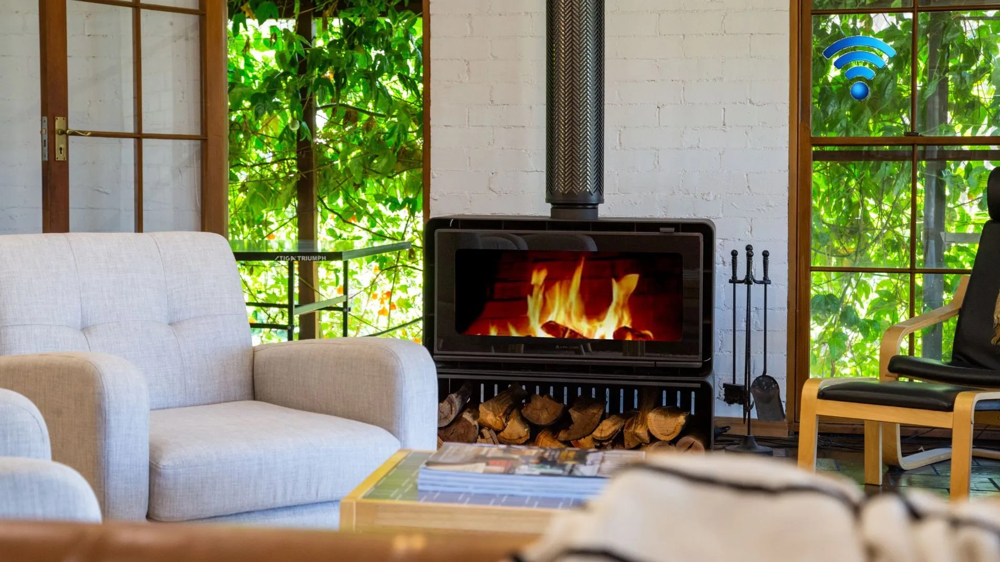

The Homestead
The Burrows of Penrose is a whole homestead set on a hundred acres in the Southern Highlands of New South Wales — a rural escape with real room to move, a short drive from the villages of Bundanoon and Penrose and around ninety minutes from Sydney. It's the kind of place you arrive at, exhale, and settle into for a few unhurried days.

Inside
Guests tell us the same thing again and again: it's the kitchen they fall for. Generous and light, it's built for everyone to cook together, with a big table where meals stretch long into the evening. Beyond it, comfortable living spaces give families and groups room to gather or find a quiet corner of their own.
When the Highlands air turns crisp, the fireplace becomes the centre of the house — the natural place to land at the end of a day spent outdoors.

The land
The property unfolds across open paddocks, a dam, and pockets of bush — yours to wander freely. Walk the fence lines at first light, sit by the water with a coffee, or follow the tracks toward Paddy's River, where a platypus has been known to appear at dawn and dusk.
It's a working rural landscape, alive with birds and animals, and a wonderful place for children to roam and for grown-ups to remember what quiet sounds like.
Meet the wildlife →At a glance
The whole homestead is yours — no shared spaces, no other guests. Ideal for two families travelling together or a group of friends.

By night, the fire is lit and the stars do the rest.
Ready when you are
Check available dates and book securely through our Airbnb listing.
Book on Airbnb See the gallery